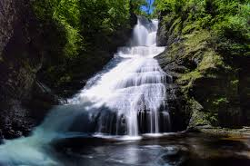
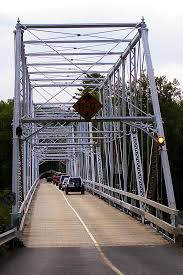
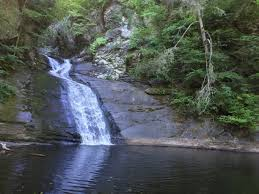

My Summer Recap

My summer was mostly spent in Digmans Ferry PA. In dingmans ferry we were fishing, hiking, and boating. Me and my family went to our house in digmans ferry every weekend only comming home for about 2-3 days a time.

This is the bridge to get into the develment this is a two way bridge that I have drove on many times

This is one of the water fall we visited the pond in front is deep enough to swim in.